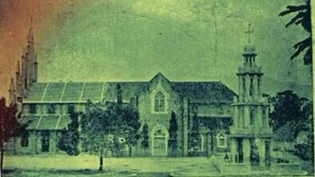

<!DOCTYPE php>
 <php lang="en">
	 <head>
		 <meta charset="utf-8" />
		 <meta name="viewport" content="width=device-width, initial-scale=1.0" />
		 <meta name="description" content="உலகின் முதல், புனித தெரேசா ஆலயம் - கண்டன்விளை (Estd.1923)" />
		 <meta name="author" content="webThemez.com" />
		 <title>STCK : கண்டன்விளை பங்கு </title>
		 <link rel="favicon" href="../assets/images/favicon.png" />
		 <link rel="stylesheet" media="screen" href="../../fonts.googleapis.com/css_c5f925f2.css" />
		 <link rel="stylesheet" href="bootstrap.min.css" />
		 <link rel="stylesheet" href="../assets/css/font-awesome.min.css" />
		 <link rel="stylesheet" href="../assets/css/bootstrap-theme.css" media="screen" />
		 <link rel="stylesheet" href="style.css" />
	 </head>
	 <body>
		 <div class="navbar navbar-inverse">
			 <div class="container">
				 <div class="navbar-header">
					 <button type="button" class="navbar-toggle" data-toggle="collapse" data-target=".navbar-collapse"><span class="icon-bar"></span><span class="icon-bar"></span><span class="icon-bar"></span></button>
					 <a class="navbar-brand" href="index.php.html"></a>
				 </div>
				 <!DOCTYPE php>
	 <script src="../../ajax.googleapis.com/ajax/libs/jquery/1.10.2/jquery.min.js"></script>
	 <script>
		var $j = jQuery.noConflict();
		$j(document).ready(function(){
			var pageName = location.href.split("/").slice(-1);
			if (pageName == "" || pageName == "index.php.html")
			{
				$('#homePage').addClass('active');
			}
			else if (pageName == "ancient-history.php.html" || pageName =="our-church.php.html" || pageName =="about-therese.php.html" || pageName =="sttherese-churches-in-india.php.html" || pageName =="rosary-hill.php.html")
			{
				$('#about').addClass('active');
			}
			else if (pageName == "parish-priests.php.html" || pageName == "sons-of-soil-priests.php.html" || pageName == "sons-of-soil-nuns.php.html")
			{
				$('#priestsAndNuns').addClass('active');
			}
			else if (pageName == "associations.php.html")
			{
				$('#piousAssociation').addClass('active');
			}
			else if (pageName == "documentary-video.php.html" || pageName =="church-altar-photos.php.html" || pageName =="festival-videos.php.html" || pageName =="festival-photos.php.html" || pageName =="car-photos.php.html" || pageName =="flagstaff-photos.php.html" || pageName =="church-photos.php.html" || pageName =="steeple-photos.php.html" || pageName =="other-photos.php.html" || pageName =="rosaryhill-photos.php.html" || pageName =="topview-photos.php.html")
			{
				$('#galleryPage').addClass('active');
			}
			else if (pageName == "parish-council.php.html")
			{
				$('#parishCouncil').addClass('active');
			}
			else if (pageName == "contact.php.html")
			{
				$('#contactPage').addClass('active');
			}
		});
	</script>
	 <div class="navbar-collapse collapse">			
		 <ul class="nav navbar-nav pull-right mainNav">
			 <li id="homePage"><a href="index.php.html">முகப்பு </a></li>
			 <li id="about" class="dropdown"><a href="#" class="dropdown-toggle" data-toggle="dropdown">வரலாறு <b class="caret"></b></a>
				 <ul class="dropdown-menu">
					 <li><a href="ancient-history.php.html">கண்டன்விளை பங்கு </a></li>
					 <li><a href="our-church.php.html">எமது ஆலய வரலாறு </a></li>
					 <li><a href="about-therese.php.html">புனித தெரேசா வரலாறு </a></li>
					 <li><a href="sttherese-churches-in-india.php.html">இந்தியாவில் புனித தெரேசா ஆலயங்கள் </a></li>
					 <li><a href="rosary-hill.php.html">ஜெபமாலை மலை சிற்றாலயம் </a></li>
				 </ul>
			 </li>
			 <li id="priestsAndNuns" class="dropdown">
				 <a href="#" class="dropdown-toggle" data-toggle="dropdown">துறவியர்  <b class="caret"></b></a>
				 <ul class="dropdown-menu">
					 <li><a href="parish-priests.php.html">பங்கு அருட்பணியாளர்கள் </a></li>
					 <li><a href="sons-of-soil-priests.php.html">மண்ணின் மைந்தர்கள் - குருக்கள் </a></li>
					 <li><a href="sons-of-soil-nuns.php.html">மண்ணின் மைந்தர்கள் - கன்னியர்கள் </a></li>
				 </ul>
			 </li>
			 <li id="piousAssociation"><a href="associations.php.html">சபைகள் </a></li>
			 <li id="galleryPage" class="dropdown"><a href="#" class="dropdown-toggle" data-toggle="dropdown">தொகுப்பு  <b class="caret"></b></a>
				 <ul class="dropdown-menu">
					 <li><a href="documentary-video.php.html">குறும்பட வெளியீடுகள் </a></li>
					 <li><a href="church-altar-photos.php.html">ஆலயப் பீடம் </a></li>
					 <li><a href="festival-videos.php.html">திருவிழா காணொளிகள் </a></li>
					 <li><a href="festival-photos.php.html">திருவிழா புகைப்படங்கள் </a></li>
					 <li><a href="car-photos.php.html">ஆலயத் தேர் </a></li>
					 <li><a href="flagstaff-photos.php.html">ஆலயக் கொடிமரம் </a></li>
					 <li><a href="church-photos.php.html">ஆலயப் புகைப்படங்கள் </a></li>
					 <li><a href="steeple-photos.php.html">ஆலயக் குருசடி </a></li>
					 <li><a href="other-photos.php.html">இதரப் புகைப்படங்கள் </a></li>
					 <li><a href="rosaryhill-photos.php.html">சிற்றாலயப் புகைப்படங்கள் </a></li>
					 <li><a href="topview-photos.php.html">ஆலய மேற்புறக் காட்சிகள் </a></li>
				 </ul>
			 </li>
			 <li id="parishCouncil"><a href="parish-council.php.html">பங்குப்பேரவை </a></li>
			 <li id="contactPage"><a href="contact.php.html">முகவரி </a></li>
			 <li><a href="../index.php.html" title="Read the website in English...">English </a></li>
			 <li><a href="https://www.youtube.com/c/StThereseChurchKandanvilai/live" target="blank" class="blinking">நேரலை </a></li>
		 </ul>				
	 </div>
 </div></div></body></php>			 </div> 
		 </div> 
		 <header id="head" class="secondary">
			 <div class="container">
				 <div class="row">
					 <div class="col-sm-8">
					 </div>
				 </div>
			 </div>
		 </header>
		 <section class="container">
			 <div class="row">
				 <section class="col-sm-12 maincontent"><br />
					 <h3>கண்டன்விளை பங்கு - தொடக்க _ா__் </h3><br />
					 <a href="http://kandanvilaichurch.blogspot.com/p/blog-page.html" target="_blank"></a>
					 <p>கண்டன்விளை ஆலயம், குழந்தை இயேசுவின் _ு_ி_ தெரேசா 1923 - இல் __ு_ா__் பட்டம் பெற்றப்பின் அவருக்கென  <a href="#" data-toggle="modal" data-target="#myModal" class="btn-inline">முதன்முதலாக எழுப்பப்பட்ட ஆலயமாகும். </a> பழம்பெரும் கண்டன்விளை ஆலய ___ா_ா__ு, தெளிவாக எழுதப்பட்டு அண்மையில் ஒரு  <a href="http://kandanvilaichurch.blogspot.com/p/st.html" alt="" class="btn-inline" target="_blank">ஆவணக்குறும்படமாக </a> வெளியிடப்பட்டுள்ளது. இது புனித _ெ_ே_ா_ி_் வரலாற்றையும் அதோடு கண்டன்விளை பங்கின் ___ா_்_ை_ு_் உள்ளடக்கியது. </p>
					 <p>திருத்தந்தை 16 - ஆம் _ி__ோ_ி_ா_், வராப்பொழி மறைமண்டலத்தை நிர்வாக வசதிக்காக, __்__ூ_் (வடக்கே), கொல்லம் (தெற்கே) மற்றும் __ா_்_ொ_ி (மத்தியில்) என்னும் மறைமாவட்டங்களாகப் பிரிக்க __ை_ு தெரிவித்தார். ரோமையிலிருந்து அதற்கு உடன்பாடான __ி_் கிடைத்தது. இந்தப் புதிய கொல்லம் __ை_ா__்__ா__ு, 1845 - ஆம் ஆண்டு _ே மாதம் 12 - ஆம் _ா_் தற்காலிகமாக உருவாக்கப்பட்டது. 1904 - __் கொல்லம் இணை ஆயர் மேதகு. __ோ_ி__் மரிய பென்சிகர் கொல்லம் மறைமண்டலத்தை, _ொ_்__், திருவனந்தபுரம் மற்றும் கோட்டாறு என்னும் _ூ_்_ு மறைமாவட்டங்களாகப் பிரிக்கும் கருத்தை முன்மொழிந்தார்; __்_ோ_ை_ கோட்டாறு மறைமாவட்டத்தின் நிலப்பகுதி, கொல்லம் __ை_ா__்__்_ி_் முக்கிய பகுதியாக விளங்குகிறது. </p>
					 <strong></strong>
					 <p>ஏப்ரல் 29, 1923 - __் ரோமையில் புனித குழந்தை தெரேசாவுக்கு __ு_ா__் பட்டமளிப்பு விழா நடைப்பெற்றது. விழாவிற்கு __்_ோ_ை_ கொல்லம் உயர்மறைமாவட்டத்தின் இணை ஆயராக __ு_்_ மேதகு. ஆலோஷியஸ் மரிய பென்சிகர் ___்__ு_் அழைக்கப்பட்டிருந்தார்; அழைப்பை ஏற்று ஆயர் ___்__ு_் விழாவில் கலந்துகொண்டார். அவ்வமையம் அங்கு ___்_ ஆயர் பேரவையில்,  <i>"கொல்லம் மறைமாவட்டத்திற்குட்பட்ட கண்டன்விளையில் எழுப்பப்படும் ____்_ை புனித குழந்தை தெரேசாவுக்காக அர்ப்பணிக்கிறேன்; _ே_ு_், இவ்வாலயம் புனித தெரேசா அருளாளர் __்__் பெற்ற பிறகு அவருக்கென முதன்முதலாக __்__்__்_ ஆலயமாக விளங்கும்" </i> என பிரகடனப்படுத்தி கண்டன்விளையை ____ி_ செய்தார். அதனடிப்படையில் கண்டன்விளையில் எழுப்பப்பட்ட _ி_ி_ ஆலயமானது, ஆயர் மேதகு. ஆலோஷியஸ் __ி_ பென்சிகர் அவர்களால் ஏப்ரல் 7, 1924 - இல் அர்ச்சிக்கப்பட்டது. பின்னர் __்_ோ_ு_்_ பெரிய ஆலயமானது கட்டப்பட்டு, முன்னாள் _ா__்_ா_ு பங்குத்தந்தை அருட்பணி. இக்னேஷியஸ் மரியா ___்__ா_் ஏப்ரல் 7, 1929 - __் அர்ச்சிக்கப்பட்டது. <a href="http://kandanvilaichurch.blogspot.com/p/blog-page.html" alt="" class="btn-inline" target="_blank"> ஆவணகுறும்படம் காண்க... </a></p>
					 <strong></strong>
					 <p>கோட்டாறு மறைமாவட்டம் இந்தியாவின் தென்கோடியிலுள்ள __ி_்_ா_ு மாநிலத்திற்குட்பட்ட கன்னியாகுமரி மாவட்டத்திலுள்ளது. இந்தியாவின் _ெ_்_ு_ை_ா_ி_ கன்னியாகுமரி, கோட்டாறு மறைமாவட்டத்தின் ஒரு __்_ா_ு_். இந்தப் புதிய மறைமாவட்டத்தின் சிறப்பு __்__ெ_்_ா_், இங்குள்ள பங்குகளில் பணியாற்றிய 32 __ு_்__்_ை__்__ி_் 28 பேர் மறைமாவட்ட குருக்கள்; ___்__் அனைவரும் இந்தியர்களே. அந்த 28 _ே_ி_் ஏழு பேர் இந்த புதிய __ை_ா__்__்_ை_் சேர்ந்தவர்கள் என்பதாகும். இன்னொரு தனிச்சிறப்பு __்__ெ_்_ா_், இந்தியாவிலுள்ள ஆயர்களின் பொறுப்பில் ஒப்படைக்கப்பட்ட _ூ_்_ா__ு மறைமாவட்டம் கோட்டாறு மறைமாவட்டமாகும். இதன் _ு__் ஆயராகப் பொறுப்பை ஏற்றுக்கொண்டவர் மேதகு. _ா__்_் பெரேரா என்னும் இந்தியர் ஆவர். </p>
					 <strong></strong>
					 <p>2014 - ஆம் ஆண்டு _ி__்__் மாதம் 22 - ஆம் _ா_ி_ி_ு_்_ு கண்டன்விளை பங்கானது குழித்துறை மறைமாவட்டத்துடன் __ை_்__்__்_ு, மிகச் சிறப்பாக செயல்பட்டு வருகிறது.  </p>
					 <strong></strong>
				 </section>
				 <aside class="col-sm-4 sidebar sidebar-right">
				  </aside>
			 </div>
		 </section>
		 <div class="container">
			 <div class="modal fade" id="myModal" role="dialog">
				 <div class="modal-dialog">
					 <div class="modal-content">
						 <div class="modal-header">
							 <button type="button" class="close" data-dismiss="modal">&times; </button>
							 <h5 class="modal-title">கண்டன்விளை ஆலயத்தைப் பற்றி, மேதகு ___். ஆலோசிஸ் மரிய பென்சிகர் அவர்களின் __ி_்_ு_ி_்_ு__்! </h5>
						 </div>
						 <div class="modal-body">
							 <p>தூய குழந்தை இயேசுவின் தெரேசா __ு_ா__் பட்டம் பெற்றப்பின் அவருக்கென முதன்முதலாக __ு_்__்__்_ ஆலயம் தான் கண்டன்விளை என்பதற்கான ____் குறிப்புகள் அடங்கிய கொல்லம் மறைமாவட்ட ___்  <b>மேதகு. அலோசியஸ் மரிய பென்சிகர் </b> அவர்களின் கடிதம் மற்றும் __ி_்_ு_ி_்_ு__்.  <a href="bishopletter.pdf" title="ஆயரின் கடிதம் மற்றும் பணிக்குறிப்புகள்" class="btn-inline" target="blank">இங்கு கிளிக் செய்து </a> பார்க்கவும்! </p>
							 <object data="bishopletter.pdf" type="application/pdf"></object>
						 </div>
						 <div class="modal-footer">
							 <button type="button" class="btn btn-default" data-dismiss="modal">வெளியேறு </button>
						 </div>
					 </div>
				 </div>
			 </div>
		 </div>
		 <footer id="footer">
	 <div class="container">
		 <div class="social text-center">
			 <a href="http://www.fb.me/thereseofkandanvilai" alt="" target="blank"><i class="fa fa-facebook"></i></a>
			 <a href="https://www.youtube.com/c/StThereseChurchKandanvilai" alt="" target="blank"><i class="fa fa-youtube"></i></a>
		 </div>
		 <div class="clear"></div>
	 </div>
	 <div class="footer2">
		 <div class="container">
			 <div class="row">
				 <div class="col-md-6 panel">
					 <div class="panel-body">
						 <p class="simplenav">
							 <a href="index.php.html">முகப்பு </a>|
							 <a href="sttherese-churches-in-india.php.html">ஆலயங்கள் </a>|
							 <a href="rosary-hill.php.html">சிற்றாலயம் </a>|
							 <a href="mass-schedules.php.html">திருப்பலி நேரங்கள் </a>|
							 <a href="associations.php.html">பக்த சபைகள் </a>|
							 <a href="contact.php.html">முகவரி </a>
						 </p>
					 </div>
				 </div>
				 <div class="col-md-6 panel">
					 <div class="panel-body">
						 <p class="text-right">காப்புரிமை &copy; 2024 அனைத்து __ி_ை__ு_் முன்பதிவு செய்யப்பட்டவை.  <br />Template by <a href="../index.html" rel="develop">St.Therese of Kandanvilai </a></p>
					 </div>
					 <div style="width:100px; margin-top:-54px; margin-left:108px;">
						 <script type="text/javascript">document.write(unescape("%3Cscript src=%27http://s10.histats.com/js15.js%27 type=%27text/javascript%27%3E%3C/script%3E"));</script>
						 <a href="http://www.histats.com" target="_blank" title="Vistor`s summary."><script type="text/javascript">
						try {Histats.start(1,3157953,4,6,200,40,"00011111"); Histats.track_hits();} catch(err){};
						</script></a>
						 <noscript><a href="http://www.histats.com" target="_blank"></a></noscript>
					 </div>
				 </div>				
			 </div>
		 </div>
	 </div>
 </footer>		 <script src="../../ajax.googleapis.com/ajax/libs/jquery/1.10.2/jquery.min.js"></script>
		 <script src="../../netdna.bootstrapcdn.com/bootstrap/3.0.0/js/bootstrap.min.js"></script>
		 <script src="../assets/js/custom.js"></script>
	 
 